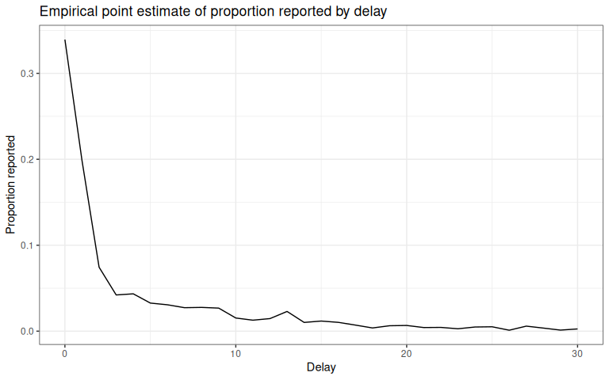
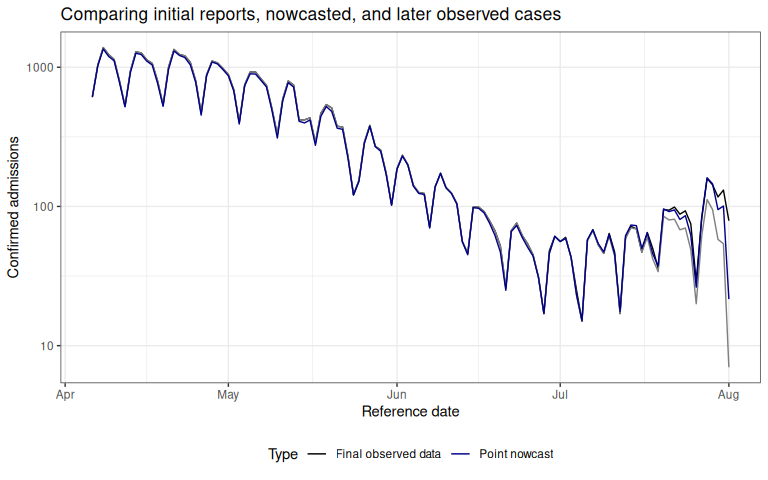

Introduction
The baselinenowcast provides a set of methods, implemented as functions, to produce probabilistic estimates of the final observed cases from partially observed case counts.
Users can build a nowcast model in two ways:
1. Using the baselinenowcast() wrapper function, which implements each step of the nowcasting workflow on one or more strata. See ?baselinenowcast.reporting_triangle and ?baselinenowcast.data.frame, as well as the Getting Started and NSSP nowcasting vignettes for examples of this workflow.
2. Using the low-level modular functions directly to allocate reference times for training, estimate a delay distribution, generate a point nowcast, estimate uncertainty, and sample from the observation model.
In this vignette, we will walk through the low-level implementation.
While the baselinenowcast() wrapper function implements the most “common” nowcasting workflow with some options for specification, the modular workflow allows for maximum flexibility to compose a model of one’s choice via passing outputs from low-level functions in a pipeline-based approach.
We recommend this workflow for any users who wish to investigate and use intermediate outputs (e.g. the point nowcast matrix) and compose their own nowcasting workflow.
We will use the same dataset and problem from the Getting Started vignette, and our assumption is that users have read that and are familiar with concepts introduced there such as the reporting triangle. Also see the model definition vignette for more details on the mathematical methods, and the nomenclature vignette for full descriptions of the terminology being used.
Packages
As well as the baselinenowcast package this vignette also uses ggplot2, tidyr, and dplyr.
For baselinenowcast, see the installation instructions.
Data
Again, we will use the package data used in the Getting Started vignette which contains COVID-19 cases in Germany by age group, indexed by the date of positive test and the date of report.
So that outputs are comparable, we will use the same specifications here.
Code
nowcast_date <- "2021-08-01"
eval_date <- "2021-10-01"
target_data <- filter(
germany_covid19_hosp,
location == "DE", age_group == "00+",
report_date <= eval_date,
reference_date <= nowcast_date
)The latest_data will be used for evaluation to compare our estimates of the final number of cases to the observed number of cases by reference date available as of October 1, 2021.
I am going to jump right into creating the dataset we need for nowcasting by filtering the data to exclude all report dates after the nowcast date, August 1, 2021.
## # A tibble: 6 × 6
## reference_date location age_group delay count report_date
## <date> <chr> <chr> <int> <dbl> <date>
## 1 2021-04-06 DE 00+ 0 149 2021-04-06
## 2 2021-04-06 DE 00+ 1 140 2021-04-07
## 3 2021-04-06 DE 00+ 2 61 2021-04-08
## 4 2021-04-06 DE 00+ 3 52 2021-04-09
## 5 2021-04-06 DE 00+ 4 36 2021-04-10
## 6 2021-04-06 DE 00+ 5 8 2021-04-11We refer to the “initial reports” as the sum of the cases at each reference date as they were available as of the nowcast date.
Code
Our task is to estimate, using the data available up until August 1, 2021, the “final” number of cases at each reference date.
Model specification
We will specify the maximum delay. We recommend choosing the maximum delay based on an exploratory data analysis of your specific dataset. See the NSSP nowcast for an example
Code
max_delay <- 30Pre-processing
We’ll start by generating a reporting_triangle object from the observed_data which contains incident case counts indexed by reference and report date.
Code
rep_tri_full <- as_reporting_triangle(observed_data)## ℹ Using max_delay = 40 from dataLet’s look at the reporting triangle we’ve created:
Code
rep_tri_full## Reporting Triangle## Delays unit: days## Reference dates: 2021-04-06 to 2021-08-01## Max delay: 40## Structure: 1## ## Showing last 10 of 118 rows## Showing first 10 of 41 columns## ## 0 1 2 3 4 5 6 7 8 9
## 2021-07-23 30 12 4 1 10 6 0 2 2 1
## 2021-07-24 31 8 4 9 8 2 5 2 1 NA
## 2021-07-25 8 4 14 8 6 5 1 3 NA NA
## 2021-07-26 9 6 2 3 0 0 0 NA NA NA
## 2021-07-27 35 11 6 4 4 1 NA NA NA NA
## 2021-07-28 51 28 25 3 5 NA NA NA NA NA
## 2021-07-29 47 37 9 2 NA NA NA NA NA NA
## 2021-07-30 36 20 2 NA NA NA NA NA NA NA
## 2021-07-31 38 16 NA NA NA NA NA NA NA NA
## 2021-08-01 7 NA NA NA NA NA NA NA NA NA## ## Use print(x, n_rows = NULL, n_cols = NULL) to see all dataWe can see the maximum delay inferred from the data. For this analysis, we want to limit our reporting triangle to a maximum delay of 30 days:
Code
rep_tri <- truncate_to_delay(rep_tri_full, max_delay = max_delay)## ℹ Truncating from max_delay = 40 to 30.Code
rep_tri## Reporting Triangle## Delays unit: days## Reference dates: 2021-04-06 to 2021-08-01## Max delay: 30## Structure: 1## ## Showing last 10 of 118 rows## Showing first 10 of 31 columns## ## 0 1 2 3 4 5 6 7 8 9
## 2021-07-23 30 12 4 1 10 6 0 2 2 1
## 2021-07-24 31 8 4 9 8 2 5 2 1 NA
## 2021-07-25 8 4 14 8 6 5 1 3 NA NA
## 2021-07-26 9 6 2 3 0 0 0 NA NA NA
## 2021-07-27 35 11 6 4 4 1 NA NA NA NA
## 2021-07-28 51 28 25 3 5 NA NA NA NA NA
## 2021-07-29 47 37 9 2 NA NA NA NA NA NA
## 2021-07-30 36 20 2 NA NA NA NA NA NA NA
## 2021-07-31 38 16 NA NA NA NA NA NA NA NA
## 2021-08-01 7 NA NA NA NA NA NA NA NA NA## ## Use print(x, n_rows = NULL, n_cols = NULL) to see all dataWe will use this reporting_triangle class object, rep_tri, for the remaining workflow steps.
In the modular workflow, we can specify the number of reference times used for delay and uncertainty estimation directly, or we can use the allocate_reference_times() function.
In this function, we specify the scale_factor which indicates the multiplicative factor on the maximum delay to determine the number of reference times for training the model, and the prop_delay which indicates what proportion of the reference times used for training are for delay estimation, with the remainder being used for uncertainty.
We will use the same values as are used by default in the allocate_reference_times() function, which is called internally within baselinenowcast().
See ?allocate_reference_times for more details.
Code
scale_factor <- 3
prop_delay <- 0.5
tv <- allocate_reference_times(
reporting_triangle = rep_tri,
scale_factor = scale_factor,
prop_delay = prop_delay
)
n_history_delay <- tv$n_history_delay
n_retrospective_nowcasts <- tv$n_retrospective_nowcastsAlternatively, if you wanted to directly specify the n_history_delay and n_retrospective_nowcasts directly, you could do this.
This might be useful if say you run your nowcast each week, but your data is daily, and you want to ensure that the number of weeks used for delay and uncertainty estimation is an integer number of weeks.
Estimate delay
Now that we have the reporting triangle, we are now ready to estimate the delay distribution.
We will tell the function the maximum delay and the number of observations we want to use for estimation.
We only want to pass in the reporting triangle (for a single group!) to this function.
See documentation for estimate_delay() for a full description of the function inputs.
Code
delay_pmf <- estimate_delay(
reporting_triangle = rep_tri,
n = n_history_delay
)Click to expand code to create the plot of the delay distribution
Code
delay_df <- data.frame(
delay = 0:(length(delay_pmf) - 1),
pmf = delay_pmf
)
delay_cdf_plot <- ggplot(delay_df) +
geom_line(aes(x = delay, y = cumsum(pmf))) +
xlab("Delay") +
ylab("Cumulative proportion reported") +
ggtitle("Empirical point estimate of cumulative proportion reported by delay") + # nolint
theme_bw()
delay_pmf_plot <- ggplot(delay_df) +
geom_line(aes(x = delay, y = pmf)) +
xlab("Delay") +
ylab("Proportion reported") +
ggtitle("Empirical point estimate of proportion reported by delay") +
theme_bw()Code
delay_cdf_plot
Code
delay_pmf_plot # Apply the delay to generate a point nowcast
The next step in our workflow is to take the estimated delay distribution and apply it to the partially observed reporting triangle, generating an estimate of the number of new cases confirmed at each reference date and delay.
This will generate a point estimate of complete the reporting matrix.
In this case, we will be applying the delay to the same reporting triangle we used to generate the estimate, but this doesn’t always have to be the case.
See the documentation for apply_delay() for a full description of the input requirements.
It is worth noting that we could also have estimated the delay and applied it in one single step by calling fill_triangle().
Code
point_nowcast_matrix <- apply_delay(
reporting_triangle = rep_tri,
delay_pmf = delay_pmf
)We’ll make a quick plot to compare our point estimate of the nowcasted confirmed cases through August 1, 2021, to the “final” observations from October 1, 2021 and to the right-truncated data available up until August 1, 2021.
Click to expand code to create the plot of the point nowcast
Code
initial_reports_labeled <- initial_reports |>
mutate(type = "Initial real-time") |>
rename(count = initial_count)
point_nowcast_df <- latest_data |>
rename(count = final_count) |>
mutate(nowcast = rowSums(point_nowcast_matrix)) |>
pivot_longer(
cols = c(count, nowcast),
names_to = "type",
values_to = "count"
) |>
mutate(type = case_when(
type == "count" ~ "Final observed data",
type == "nowcast" ~ "Point nowcast",
TRUE ~ type
)) |>
bind_rows(
initial_reports_labeled
)
# Create plot with data type as a variable
plot_pt_nowcast <- ggplot(point_nowcast_df, aes(
x = reference_date,
y = count,
color = type
)) +
geom_line() +
scale_color_manual(values = c(
"Initial reports" = "darkred",
"Final observed data" = "black",
"Point nowcast" = "darkblue"
)) +
theme_bw() +
xlab("Reference date") +
ylab("Confirmed admissions") +
scale_y_continuous(trans = "log10") +
ggtitle("Comparing initial reports, nowcasted, and later observed cases") +
theme(legend.position = "bottom") +
labs(color = "Type")Code
plot_pt_nowcast Here we can see that our point nowcast (blue) slightly underestimates what was eventually reported (black), but does a decent overall job of correcting for the right-truncation observed in the the data as of the nowcast date (red).
Estimate uncertainty
So far, we’ve demonstrated how to generate a point estimate of a nowcast. We would like to generate probabilistic nowcasts.
We’ll do so by estimating uncertainty using past nowcast errors.
We repeat this process for n_retrospective_nowcasts reference times in the current reporting triangle, starting from the latest reference time and working backwards, ultimately using all n_retrospective_nowcasts and n_history_delay reference times.
We’ll start by creating a list of truncated triangles using the truncate_triangles() function which successively removes an addition additional reference time from the original reporting triangle n times.
Code
trunc_rep_tri_list <- truncate_triangles(
rep_tri,
n = n_retrospective_nowcasts
)For each truncated triangle, we will use the apply_reporting_structures() function to generate what would have been available as of the latest reference time within each truncated triangle.
We refer to these as retrospective reporting triangles.
Code
retro_rep_tri_list <- apply_reporting_structures(trunc_rep_tri_list)Next we will pass this list of reporting triangles to the fill_triangles() and specify n, the number of reference times to be used to estimate the delay for each nowcast, which we will set as the n_history_delay previous specified.
Code
retro_pt_nowcast_mat_list <- fill_triangles(
retro_reporting_triangles = retro_rep_tri_list,
n = n_history_delay
)This function will generate a list of point nowcast matrices using the delay estimated from each retrospective reporting triangle.
Next, we will use the retrospective reporting triangles, the point nowcast matrices, and the truncated reporting triangles to estimate the uncertainty at each horizon, starting at horizon 0 using the estimate_uncertainty() function.
Code
disp_params <- estimate_uncertainty(
point_nowcast_matrices = retro_pt_nowcast_mat_list,
truncated_reporting_triangles = trunc_rep_tri_list,
retro_reporting_triangles = retro_rep_tri_list,
n = n_retrospective_nowcasts
)T his function uses a negative binomial observation model by default, and independently estimates the dispersion in the negative binomial at each forecast horizon.
Note that the estimation of uncertainty from a reporting triangle can be done in a single step using the estimate_uncertainty_retro() function, which chains together the truncation of triangles, construction of retrospective reporting triangles, the generation of point nowcasts via filling the triangles, and the estimation of the uncertainty from the estimates compared to the observations.
Generate probabilistic nowcast
Now that we have estimated the dispersion, we can generate a probabilistic nowcast using the sample_nowcasts() function which:
- generates draws from the nowcast distribution
- combines the draws with the observed data to form a single draw of the nowcast
- repeats this process for
drawsdraws
Note that from a point nowcast and a reporting triangle, one could also estimate and apply uncertainty using the estimate_and_apply_uncertainty() function.
Code
nowcast_draws_df <- sample_nowcasts(
point_nowcast_matrix,
rep_tri,
uncertainty_params = disp_params,
draws = 100
)
head(nowcast_draws_df)## pred_count reference_date draw
## 1 609 2021-04-06 1
## 2 1024 2021-04-07 1
## 3 1352 2021-04-08 1
## 4 1195 2021-04-09 1
## 5 1113 2021-04-10 1
## 6 773 2021-04-11 1See documentation for sample_nowcasts()for further details.
Visualizing the nowcast
Let’s visualize the nowcast compared to the final observed data. We first need to join our nowcast with the original data so we can see our nowcast by reference date.
Code
## pred_count reference_date draw final_count initial_count
## 1 609 2021-04-06 1 615 615
## 2 1024 2021-04-07 1 1036 1036
## 3 1352 2021-04-08 1 1384 1384
## 4 1195 2021-04-09 1 1232 1232
## 5 1113 2021-04-10 1 1137 1137
## 6 773 2021-04-11 1 794 794Create a separate dataframe for only the observed and final data, to make plotting easier.
Code
combined_data <- obs_with_nowcast_draws_df |>
select(reference_date, initial_count, final_count) |>
distinct() |>
pivot_longer(
cols = c(initial_count, final_count),
names_to = "type",
values_to = "count"
) |>
mutate(type = case_when(
type == "initial_count" ~ "Initial reports",
type == "final_count" ~ "Final observed data"
))Click to expand code to create the plot of the probabilistic nowcast
Code
combined_data <- obs_with_nowcast_draws_df |>
select(reference_date, initial_count, final_count) |>
distinct() |>
pivot_longer(
cols = c(initial_count, final_count),
names_to = "type",
values_to = "count"
) |>
mutate(type = case_when(
type == "initial_count" ~ "Initial reports",
type == "final_count" ~ "Final observed data"
))
# Plot with draws for nowcast only
plot_prob_nowcast <- ggplot() +
# Add nowcast draws as thin gray lines
geom_line(
data = obs_with_nowcast_draws_df,
aes(
x = reference_date, y = pred_count, group = draw,
color = "Nowcast draw", linewidth = "Nowcast draw"
)
) +
# Add observed data and final data once
geom_line(
data = combined_data,
aes(
x = reference_date,
y = count,
color = type,
linewidth = type
)
) +
theme_bw() +
scale_color_manual(
values = c(
"Nowcast draw" = "gray",
"Initial reports" = "darkred",
"Final observed data" = "black"
),
name = ""
) +
scale_linewidth_manual(
values = c(
"Nowcast draw" = 0.2,
"Initial reports" = 1,
"Final observed data" = 1
),
name = ""
) +
scale_y_continuous(trans = "log10") +
xlab("Reference date") +
ylab("Hospital admissions") +
theme(legend.position = "bottom") +
ggtitle("Comparison of admissions as of the nowcast date, later observed counts, \n and probabilistic nowcasted counts") # nolintCode
plot_prob_nowcast Gray lines indicate the probabilistic nowcast draws, which are a combination of the already observed data at each reference date and the predicted nowcast draws at each reference date.
Black lines show the “final” data from October 1, 2021.
Gray lines indicate the probabilistic nowcast draws, which are a combination of the already observed data at each reference date and the predicted nowcast draws at each reference date.
Black lines show the “final” data from October 1, 2021.
Summary
In this vignette we used the baselinenowcast low-level modular functions to convert a dataframe with incident cases indexed by reference date and report date to a reporting_triangle object using the as_reporting_triangle function, and then walked through the baselinenowcast workflow step by step. This involved:
1. estimate_delay() - Estimating a delay
2. apply_delay() - Generating a point nowcast matrix
3. truncate_triangles() - Truncating triangles at iteratively earlier retrospective nowcast times
4. apply_reporting_structures() - Constructing retrospective reporting triangles based on what would have been available as of the nowcast date.
5. fill_triangles() - Generating point nowcasts from the retrospective reporting triangles
6. estimate_uncertainty() - Estimating uncertainty from retrospective point nowcast matrices and eventual observations.
7. sample_nowcasts() - Sampling from the observation model to generate probabilistic nowcasts
This modular workflow allows for maximum flexibility and the ability to interrogate intermediate steps.
The idea is that from these component functions, a wide range of baselinenowcast models can be developed via a pipeline-based approach where the outputs of one function are passed to the inputs of another function, or the inputs of one function can for example be swapped with an external estimate.
This vignette walks through and produces the same results as in the Getting Started vignette, which uses the package default settings to specify the model. However, the optimal settings will depend on the context and its important to tune the model to your dataset and needs. In our publication we show examples using the various model specifications to produce and evaluate the performance of age-group specific nowcasts of COVID-19 in Germany and norovirus cases in England. Here’s a link to the code used to generate those nowcasts if interested in doing something similar for your own settings.
We encourage users to test the performance of different specifications of their model, ideally by producing nowcasts from different model specifications for a range of past nowcast dates, using the data that would have been available as of the past nowcast date, and comparing those nowcasts to later observed data.